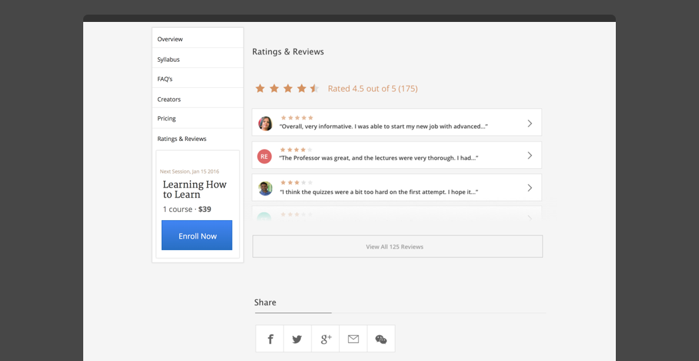

Learner Ratings & Feedback
Advancing pedagogy and improving online course quality have always been one of the core values of Coursera. However Coursera had lacked ways to objectively measure and share course quality. Course ratings and item level feedback was to solve that problem and benefit learners as well as Couresra content strategy.
As the designer in charge of the product, I designed the ratings sysyem for web and mobile apps. My responsibility included finding the right moment during learner experience for rating, determine optimal interaction, and work with a data analyst to form hypothesis and design the right AB testing buckets with nuanced details.
Course Ratings
Course ratings UI allows learners to explicitly rate and provide text feedback on a course they're enrolled. Start by finding the right moment to rate a course within learning experience by mappring out higher level learner journey and understanding the motivation for each breakpoint/moment, during the journey.
-
-
The quality of feedback we received was high (insert metrics here). Ratings collected by learners are displayed on the Course Description Page. By showing course ratings and reviews, a learner feels more comfortable and informed when browse, enroll and purchase courses.
In addition, bigger delta in revenue and enrollment provides a stronger incentive for course team to take action and improve content quality.
-

Item Feedback AB Testing
In addition to course level rating, Coursera needed more granular item level did was to instroduce item level feedback.
To maximize the interaction rate, We tested nine buckets (including control) with various combination of icons, interaction, and text link. Among the winning group with thumbs up, down, and flag icon, input with no additional input box had 34% higer reinteraction rate, thus making it our UI of choice. Once the direction is decided, we implemented on mobile as well
This lightweight mechanism has received remarkable response rates with overall 8.21% of learners participating. The rich data provided us with a mechanism to measure quality effectively.
in addition to collecting general sentiment of certain item, we also designed a system to collect detailed feedback on the content or technical issue of an item. This not only provided rich information to course team in terms of content quality but also to Coursera operational teams so that they can address the technical issues promptly, thus ensureing learner satisfaction.
The Result
Our analysis showed positive correlation between aggregated course rating and course enrollment - We found that the aggregated course rating is positively correlated with both course active enrollment and paid enrollment (back up with metrics). The measure enabled Coursera to compare courses across and within domain, thus providing with more insights and forsights. In parallel, we developed Instructor Data Dashboard so that course team can monitor learner feedback on their content.
Providing such actionable data provieded strong incentive for course staff to take action and improve content quality. For example, one course team improved a course rating by over 0.7 points by addressing the issues learners raised.